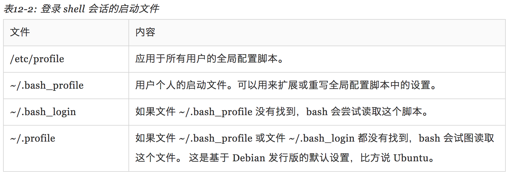
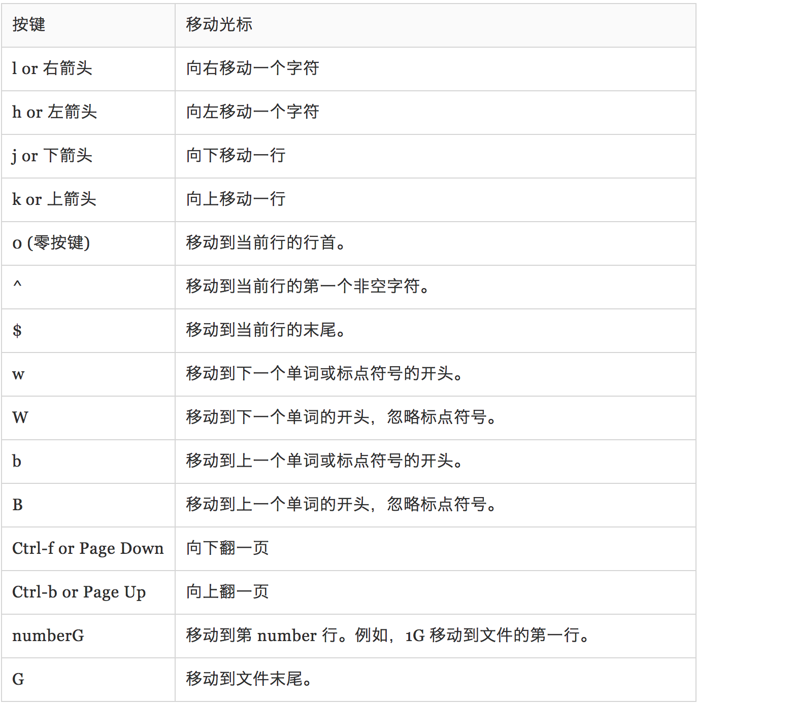
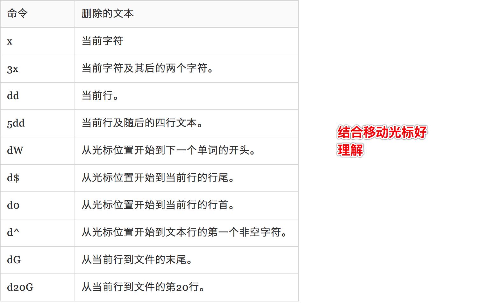
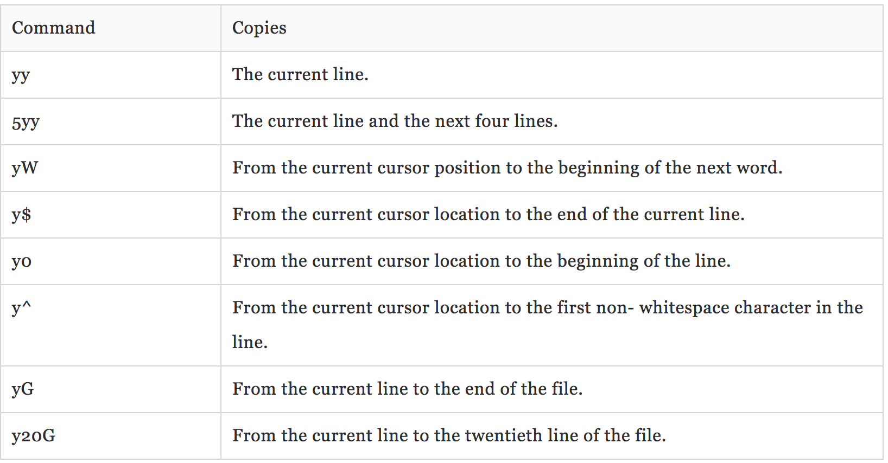
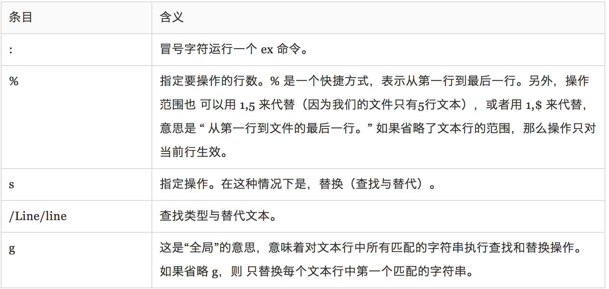

第11章：shell 环境 🏡
shell 在 shell 会话中保存着大量信息。这些信息被称为 (shell 的) 环境。 程序获取环境中的数据（即环境变量）来了解本机的配置。虽然大多数程序用配置文件来存储程序设置， 一些程序会根据环境变量来调整他们的行为。知道了这些，我们就可以用环境变量来自定制 shell 体验。
2
3
4
- set - 设置 shell 选项
- export — 导出环境变量，让随后执行的程序知道。
- alias - 创建命令别名
printenv & set
shell 在环境中存储了两种基本类型的数据，虽然 bash 几乎无法分辨这些数据的类型。 它们是环境变量和 shell 变量。Shell 变量是 bash 存放的少量数据。剩下的都是 环境变量。除了变量，shell 也存储了一些可编程的数据，即别名和 shell 函数。
我们可以用 bash 的内建命令 set，或者是 printenv 程序来查看环境变量。set 命令可以 显示 shell 或环境变量，而 printenv 只是显示环境变量。
1 | printenv | less |
当使用没有带选项和参数的 set 命令时，shell 变量，环境变量，和定义的 shell 函数 都会被显示。不同于 printenv 命令，set 命令的输出很友好地按照首字母顺序排列：
1 | set | less |
如何建立 shell 环境？
When we log on to the system, the bash program starts, and reads a series of configuration scripts called startup files, which define the default environment shared by all users. This is followed by more startup files in our home directory that define our personal environment. The exact sequence depends on the type of shell session being started. There are two kinds: a login shell session and a non-login shell session.
登录shell或者非登录shell都会去读取相应的文件，但是读取的文件多少会有区别。例如：
登录shell可能会读取：

非登录shell可能会读取：

一个典型的 .bashrc 文件可能长下面这样：1
2
3
4
5
6
7
8# .bash_profile
# Get the aliases and functions
if [ -f ~/.bashrc ]; then
. ~/.bashrc
fi
# User specific environment and startup programs
PATH=$PATH:$HOME/bin
export PATH
翻译过来可能是：1
2If the file ~/.bashrc exists, then
read the ~/.bashrc file.
是否曾经对 shell 怎样知道在哪里找到我们在命令行中输入的命令感到迷惑？例如，当我们输入 ls 后， shell 不会查找整个计算机系统来找到 /bin/ls（ls 命令的全路径名），相反，它查找一个目录列表， 这些目录包含在 PATH 变量中。
我们对于文件 .bashrc 的修改不会生效，直到我们关闭终端会话，再重新启动一个新的会话， 因为 .bashrc 文件只是在刚开始启动终端会话时读取。然而，我们可以强迫 bash 重新读取修改过的 .bashrc 文件，使用下面的命令：1
2
3
4alias l.='ls -d .* --color=auto'
alias ll='ls -l --color=auto'
source .bashrc
第12章： vi简介🐩
这个我已经比较熟悉了，这里还是列出下书里的总结，整体的总结书里写的挺好：
vi（发音“vee eye”），大多数 Linux 发行版不包含真正的 vi；而是自带一款高级替代版本，叫做 vim（它是“vi improved”的简写）由 Bram Moolenaar 开发的。vim 相对于传统的 Unix vi 来说，取得了实质性进步。通常，vim 在 Linux 系统中是“vi”的符号链接（或别名）。
移动光标

补充一个：0,$,^,g_ 的区别和联系。0,$是到行头和行尾，^,g_到非blank字符位置。J合并行。
文本删除命令

复制命令

全局查找与替换
如:%s/Line/line/g
查找一行内的是用 f 命令，查找下一个出现的，是用 /命令。

多行编辑
- vi file1 file2 file3…
- :n 从这个文件切换下一个文件，使用这个 ex 命令
- :N 回到先前的文件使用:N
- :buffers 我们可以查看正在编辑的文件列表，使用:buffers 命令。运行这个 命令后，屏幕顶部就会显示出一个文件列表, :buffers 2 就切换到2号文件了。
第13章：自定制 shell 提示符 💉
和 Linux 内的许多程序一样，shell 提示符是可高度配置的，虽然我们把它相当多地看作是理所当然的， 但是我们一旦学会了怎样控制它，shell 提示符是一个相当有用的工具。
我们的默认提示符如下：1
[me@linuxbox ~]$
注意它包含我们的用户名，主机名和当前工作目录，但是它又是怎样得到这些东西的呢？ 结果证明非常简单。提示符是由一个环境变量定义的，叫做 PS1（是“prompt string one” 的简写）。我们可以通过 echo 命令来查看 PS1的内容。
认识$PS1
1 | [me@linuxbox ~]$ echo $PS1 |
更改 $PS1
我们可以首先备份下 $PS1, 然后再随意修改 $PS1, 最后再重新变回来就可以了。1
2
3
4
5
6
7
8// 备份 PS1
ps1_old="$PS1"
// 随意修改 PS1
$ PS1="\a\$ "
// 最后改回来
PS1=$ps1_old
其实这个我平时肯定不会用，但是看着看着还挺有意思的，就随意记录了下。
总结 🌺
这几个章节主要是总结了配置文件和 shell 环境这 一张。这章内容少用，但是对于理解整体 shell 是很有帮助的。
时间都是挤出来的，事实证明利用好中午和晚上回家之前的时间，也是能有所收获。📚